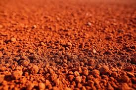
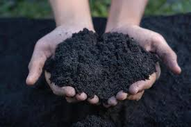

நீங்கள் ஒவ்வொரு மண் வகைப் படத்தைத் தொடும் போது, அதற்கான ஒலி இயக்கப்படும்.

சிவப்பு மண் ஈரப்பதம் தக்கவைப்பு: மிதமானது முதல் குறைவு வரை (விரைவாக நீரை வடிகட்டும்) பயிர்கள்: பருத்தி, நிலக்கடலை, பருப்பு வகைகள் உரம்: உயிர்ம பசளை, பாஸ்பரஸ் நிறைந்த உரம்.

கருப்பு மண் ஈரப்பதம் தக்கவைப்பு: மிகவும் அதிகம் (நீண்ட நேரம் ஈரப்பதத்தை தக்கவைக்கும்) பயிர்கள்: பருத்தி, சோயா பீன், சூரியகாந்தி உரம்: நைட்ரஜன் மற்றும் பாஸ்பரஸ் நிறைந்த உரங்கள், பசளை.